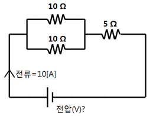

경비지도사-2차(기계경비개론) (2012-11-17 기출문제)
1. 기계경비업무에 관한 설명으로 옳지 않은 것은?
- 경비대상시설에 기기를 설치한다.
- 도난, 화재 등 위험 발생을 방지하는 업무이다.
- 계속적인 감시가 이루어지므로 인간의 감시보다 안정적이다.
- 현장에서 바로 신속하고 정확한 조치를 할 수 있다.
(정답률: 알수없음)

2. 생체인식 기술에서 요구하는 특성이 아닌 것은?
- 보편성
- 영구성
- 기만성
- 불용성
(정답률: 알수없음)
3. 다음과 같은 회로에서 전압은?

- 50 V
- 100 V
- 125 V
- 150 V
(정답률: 알수없음)
4. 외곽침입감지 시스템의 현장 제어반에 표시되지 않는 것은?
- 전원 상태
- 진동 종류
- 이상 종류
- 영역별 상태
(정답률: 알수없음)
5. 다음 설명 중 옳지 않은 것은?
- 전류의 세기는 저항값에 비례한다.
- 전력은 전압과 전류의 곱이다.
- 1[Ω]은 도체 양단에 1[V]의 전압을 가할 때, 1[A]의 전류가 흐르는 경우의 저항값이다.
- 전지의 병렬연결 시 전압은 1개의 기전력과 같고 전류는 각 전지 전류의 합이 된다.
(정답률: 알수없음)
6. 광역망(WAN)에서 분류하는 공중망이 아닌 것은?
- PSTN
- PSDN
- ISDN
- DSUN
(정답률: 알수없음)
7. 제1종 접지공사의 접지 저항값의 기준은?
- 10 Ω 이하
- 50 Ω 이하
- 100 Ω 이하
- 200 Ω 이하
(정답률: 알수없음)
8. 기계경비 시스템에 관한 설명으로 옳지 않은 것은?
- 알람(alarm) : 위험 발생의 경고
- 탬퍼(tamper) : 고의의 방해를 감시하는 기능
- 벤트 감지기(vent sensor) : 구부러진 곳에 사용하는 감지기
- 존(zone) : 감지기를 경비계획에 따라 감시구역별로 구분해 놓은 일정 지역
(정답률: 알수없음)
9. 다수의 감지기를 이용하여 오경보를 줄이기 위한 결선(회로) 방법은?
- AND 회로
- OR 회로
- NAND 회로
- NOR 회로
(정답률: 알수없음)
10. 전용회선에 관한 설명으로 옳지 않은 것은?
- point-to-point 방식이다.
- 1:1 직통회선이다.
- 24시간 통신이 가능하다.
- dial-up modem을 사용한다.
(정답률: 알수없음)
11. 다음 설명 중 옳지 않은 것은?
- 척도 : 도면에 그린 물체의 크기와 실제 물체의 크기 비
- 축척 : 도면상의 물체를 실제보다 작게 그리는 방법
- 실척 : 도면상의 크기와 실물의 크기가 같게 그리는 방법
- 배척 : 도면상에 물체를 그릴 때 뒤에서 보고 그리는 방법
(정답률: 알수없음)
12. 기계경비 시스템에서 중요 경비대상물에 대한 직접규제에 해당하는 것은?
- 유리창에 유리감지기로 규제하는 것
- 셔터에 셔터감지기로 규제하는 것
- 금고에 금고감지기로 규제하는 것
- 벽에 벽감지기로 규제하는 것
(정답률: 알수없음)
13. 적외선 감지기의 행동별 감지 응답속도가 바르게 연결된 것은?
- 빠르게 뛸 수 있는 지역 : 10 ms
- 천천히 뛸 수 있는 지역 : 100 ms
- 기어 다니는 지역 : 300 ms
- 보통 걸을 수 있는 지역 : 500 ms
(정답률: 알수없음)
14. CCTV 모니터 설치 운영 시 주의사항이 아닌 것은?
- 일광이나 조명 빛이 모니터에 직접 들어오지 않도록 설치한다.
- 모니터의 배후가 밝은 장소는 피해서 설치한다.
- 자기를 발생하는 전기기기에서 멀리 설치한다.
- 먼지의 유입을 차단하기 위해 통풍이 되지 않는 곳에 설치한다.
(정답률: 알수없음)
15. 열선 감지기(PIR Sensor)의 주요 소자가 아닌 것은?
- 필터
- 초전소자
- 발광 다이오드
- 프레넬 렌즈
(정답률: 알수없음)
16. 온도에 따라 자속량의 변화가 극히 적고 높은 자속 밀도를 얻을 수 있으며 높은 경도를 가지나 보자력이 약해서 감자가 쉽게 일어나는 단점이 있는 자석은?
- 알니코(alnico) 자석
- 페라이트(ferrite) 자석
- 희토류 자석
- 고무 자석
(정답률: 알수없음)
17. 감쇠량과 누화가 적고 고주파 특성이 우수하여 대용량 전송이나 광대역 신호전송에 적당한 화상 전송 케이블은?
- 동축 케이블
- 평형 케이블
- 열화 케이블
- UTP 케이블
(정답률: 알수없음)
18. 열선 감지기의 설치 시 주의사항이 아닌 것은?
- 감지기 경계 존(zone)을 가로지르는 방향으로 설치한다.
- 난방기, 환풍기, 계단 옆과 같이 공기의 흐름이 있는 장소는 피하는 것이 좋다.
- 감지구역 안에 흔들리는 전시물이나 물체가 있는 곳은 피하도록 한다.
- 창문 경계 시 외부와 접하는 창이나 문의 유리창에 경계 존(zone)이 향하도록 한다.
(정답률: 알수없음)
19. 감지기 설치 공사의 배관 방법으로 옳지 않은 것은?
- 옥내 소동물에 의한 손상을 방지하기 위해 금속전선관(steel conduit)을 배관한다.
- 건조한 옥내 노출장소에 합성수지 몰드(plastic mold)로 배관한다.
- 습한 장소에서는 제1종 가요관(flexible conduit)을 배관한다.
- 다량의 케이블을 동시에 배관할 경우 덕트(duct)로 배관한다.
(정답률: 알수없음)
20. 경비업법에서 규정하고 있는 기계경비 관련사항에 대한 설명 중 옳지 않은 것은?
- 기계경비지도사는 기계경비업무에 종사하는 경비원을 지도ㆍ감독 및 교육한다.
- 기계경비업자는 출동차량의 도색 및 표지를 확인할 수 있는 사진을 주된 사무소를 관할하는 경찰서장에게 제출하여야 한다.
- 기계경비업자는 관제시설 등에서 경보를 수신한 때부터 늦어도 25분 이내에는 도착시킬 수 있는 대응체제를 갖추어야 한다.
- 기계경비업자는 경비대상시설에서 발생한 경보를 수신하는 경우에 취하는 조치를 기재한 서면(전자문서 포함)을 계약상대방에게 교부하여야 한다.
(정답률: 알수없음)
21. 야간(0 Lux)에도 해상도 저하가 적으며 감시가 가능한 카메라는?
- 적외선 카메라
- 저조도 카메라
- 자외선 카메라
- 가시광선 카메라
(정답률: 알수없음)
22. 다음 중 옥외형 감지기로 적합하지 않은 것은?
- 적외선 감지기
- 전계 감지기
- 장력 감지기
- 금고 감지기
(정답률: 알수없음)
23. 칼라 TV 시스템에서 휘도신호에 혼입된 칼라신호 성분에 의해 화상의 재생에 문제를 일으키는 현상은?
- 크로스 칼라(cross color)
- 플렌지 백(flange back)
- 프레임(frame)
- 플리커(flicker)
(정답률: 알수없음)
24. 일반 케이블과 비교하여 광섬유 케이블의 장점이 아닌 것은?
- 대역폭이 넓다.
- 감쇠율이 적다.
- 현장 설치가 용이하다.
- 고품질 전송이 가능하다.
(정답률: 알수없음)
25. MPEG-4 보다 더 많은 압축율과 개선된 품질을 제공하는 동영상 압축방식은?
- H.264
- JPEG
- WAVELET
- M-JPEG
(정답률: 알수없음)
26. 디지털 녹화기에 초당 20 프레임(frame)의 동영상 데이터를 10분 동안 녹화한 데이터의 용량은? (단, 동영상의 1 프레임 데이터는 400,000 byte 이며, 1Gbyte는 109byte로 한다.)
- 2.8 Gbyte
- 3.4 Gbyte
- 4.8 Gbyte
- 5.4 Gbyte
(정답률: 알수없음)
27. 센서 케이블 내의 미세한 도체 전류에 의해 형성된 균일한 전자계가 외부의 충격을 받으면 변화가 발생되고, 이 변화를 센서 케이블과 연결된 신호분석기가 미세한 변화의 전자계 값을 감지하여 경보토록 하는 외곽침입감지 시스템은?
- 광섬유 센서
- 자력식 진동 센서
- 장력 센서
- 마이크로웨이브 센서
(정답률: 알수없음)
28. 공개된 장소에 CCTV 설치 운영에 관한 설명으로 옳지 않은 것은?
- 개인의 사생활을 현저히 침해할 수 있는 불특정 다수 이용 장소의 내부를 볼 수 있는 CCTV 설치는 불가하다.
- CCTV 안내판을 알아보기 쉬운 장소에 부착한다.
- 녹음 기능을 사용할 수 없다.
- CCTV 운영관리 방침은 보안을 철저히 한다.
(정답률: 알수없음)
29. RFID 카드에 대한 설명이 아닌 것은?
- 수동형과 능동형이 있다.
- 비 접촉식이므로 내구성이 우수하다.
- 금속이나 수분의 영향을 받지 않는다.
- 태그의 크기나 형태를 다양하게 설계할 수 있다.
(정답률: 알수없음)
30. 다음 중 데드 볼트(dead bolt)에 관한 설명으로 옳은 것은?
- 솔레노이드를 이용하여 문틀의 구멍에 래치 볼트를 넣고 빼어 여닫는 방식을 이용하는 장치
- 전기적 자성에 의해 문틀의 장치와 문짝의 플레이트를 붙이고 떨어지게 하는 형태의 장치
- 솔레노이드에 의해 스트라이크를 결합, 해제하여 실린더 래치를 풀고 잠그는 원리를 이용하는 장치
- 전기정이 설치되어 있는 문 안쪽에 설치하여 전기정을 제어하는 장치
(정답률: 알수없음)
31. 문의 재질과 그 개폐방향에 따른 전기정 설치의 연결이 옳지 않은 것은?
- 금속나무 - 단방향 : electric-strike 전기정
- 강화유리 - 양방향 : dead-bolt 전기정
- 금속나무 - 양방향 : dead-bolt 전기정
- 강화유리 - 단방향 : strike 전기정
(정답률: 알수없음)
32. 사용자가 자신의 신원을 시스템에 알리지 않은 상태에서 생체 정보를 입력할 때, 시스템이 입력된 샘플을 사전에 등록된 모든 데이터와 비교하여 등록 여부를 판별하는 부정적 확인 방식은?
- 인증(verification)
- 인식(identification)
- 검증(inspection)
- 분석(analysis)
(정답률: 알수없음)
33. 화재 감지기에 사용되는 열 감지기 중 일국소의 열효과에 의하며 주위 온도가 일정 온도 이상이 되면 작동되는 감지기는?
- 정온식 분포형 열 감지기
- 차동식 분포형 열 감지기
- 정온식 스포트형 열 감지기
- 차동식 스포트형 열 감지기
(정답률: 알수없음)
34. 출입통제시스템에서 비인가 복사가 어렵고 기계적 인식율이 좋으며 데이터 용량이 큰 특징을 갖는 방법은?
- QR 코드 인식
- 광학 문자 인식
- 바코드 인식
- 스마트카드 인식
(정답률: 알수없음)
35. 데이터 전송방식에 관한 설명으로 옳지 않은 것은?
- 직렬 전송은 서로 다른 전송선을 통해 한 비트씩 전송하는 방식으로 에러가 적어 단거리 전송에 적합하며 속도가 빠르다.
- 병렬 전송은 단위 시간 내 다량의 데이터를 빠른 속도로 전송이 가능하나 전송이 길어지면 에러 발생 가능성이 높다.
- 동기 전송은 비동기 전송에 비하여 전송효율이 좋다.
- 비동기 전송은 동기화를 위해서 전송의 시작과 끝을 알리는 제어정보를 데이터의 앞뒤에 삽입하여 프레임을 구성한다.
(정답률: 알수없음)
36. 외곽침입 감지기로 사용되는 마이크로웨이브 감지기를 옳게 설명한 것은?
- 10 MHz대의 마이크로웨이브를 송ㆍ수신한다.
- 수신기는 전파의 수신량 변화를 감지한다.
- 안개가 심한 곳에는 장애를 많이 받으므로 불리하다.
- 낙뢰로 인한 영향을 받지 않는다.
(정답률: 알수없음)
37. 기계경비 시스템에서 사용하는 감지기에 관한 설명 중 옳지 않은 것은?
- 마이크로웨이브 감지기는 공기 흐름의 영향이 적다.
- 초음파 감지기는 주로 실내용으로 사용된다.
- 열선 감지기는 소동물에 민감하다.
- 적외선 감지기는 원적외선을 이용한다.
(정답률: 알수없음)
38. 벡터 양자화 기법에 의해 코드북을 작성하고 실제 상황에서 입력된 신호의 LPC 계수를 코드북과 비교하여 개인별로 인식하는 것은?
- 지문인식
- 정맥인식
- 음성인식
- 망막인식
(정답률: 알수없음)
39. 장력 센서의 특징이 아닌 것은?
- 기기가 고가이며 설치 비용이 많이 소요된다.
- 고장 시 특수요원에 의한 장시간 수리가 필요하다.
- 기계적 장치로 구성되어 낙뢰에 강하다.
- 땅을 파고 침입하는 경우에는 감지하기 어렵다.
(정답률: 알수없음)
40. 외곽침입감지 시스템 선택 시 고려사항이 아닌 것은?
- 내구성이 양호하여야 한다.
- 오동작이나 오경보가 최소화되어야 한다.
- 사용조작이 간편하고 경보 시 식별이 용이하여야 한다.
- 외부에 설치하므로 기상조건에 민감하게 반응하여야 한다.
(정답률: 알수없음)